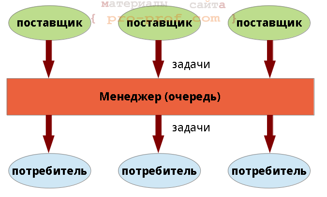
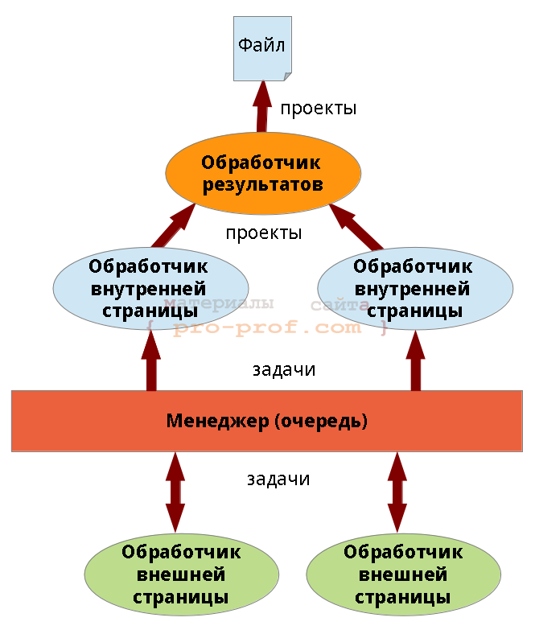

Получение данных с сайта. Шаблон Producer/Consumer [Qt, C++]
В последнее время часто встречал вопросы о получении данных с сайта на С++, поэтому решил написать статью, посвященную этой теме.
В качестве примера статьи рассмотрена задача получения бесплатных проектов с одного фриланс-сайта [1]. На этом сайте, есть страница со списком проектов, на которой есть их (проектов) частичное описание и ссылка на страницу проекта, но наша задача - получить полное описание (оно есть на странице проекта).
В статье описаны:
Шаблон проектирования "поставщик/потребитель"
Шаблон "поставщик/потребитель" - шаблон параллельного программирования, нем принимают участие:
На каждую задачу можно было бы создать по отдельному потребителю (потоку), однако, это эффективное решение - лучше, количество потоков должно совпадать с числом ядер процессора. Эту проблему и решает шаблон producer/consumer.
Суть шаблона заключается в том, что каждый поставщик и потребитель работает в отдельном потоке. Поставщики помещают задачи в очередь, а не занятые потребители вытаскивают их и выполняют. Очень схематично это показано на рис.1
.
Шаблон проектирования Producer-Consumer
Реализация может быть самой различной, например, может не выделяться явно класс "задача". Возможны вариации на тему "очереди" - это может быть как объект, работающий в отдельном потоке, так и очередь в разделяемой памяти, охраняемая мьютексом.
В некоторых реализациях менеджер может управлять последовательностью выполнения задач, например, если они имеют приоритеты или задачи связаны между собой. В этом случае менеджер хранит информацию не только о задачах, но и о потребителях.
Родственные паттерны. Если мы перестанем задумываться откуда поступают данные (забудем о поставщиках) - то придем к шаблону Thread Pool (пул потоков). Если в пуле потоков будет лишь один поток - шаблон будет называться Worker Thread (рабочий поток).
Загрузка страницы
Для загрузки страницы в Qt4 использовался класс QHttp, однако, он готовится к удалению и в Qt5 оставлен для совместимости в отдельном модуле - его использовать сейчас не стоит и мы его не коснёмся.
Загрузку страниц в Qt, в принципе, можно производить с помощью классов QWebView и QWebPage. Оба класса очень объёмны и предназначены для отрисовки содержимого страницы - первый из них представляет собой почти полноценный веб-браузер. Эти классы могут быть полезны и в других случаях (когда отрисовка не требуется), т.к. представляют страницу в виде DOM (Document Object Model), позволяет выполнить JavaScript, размещенный на странице и еще много всего. В связи с тем, что их основной функционал в нашем случае не нужен - не будем ими пользоваться (тем более эти классы связаны с GUI, поэтому не могут работать в отдельном потоке).
Для загрузки страниц в Qt5 используется класс QNetworkAccessManager, в частности, он позволяет отправлять POST- и GET-запросы. Помимо QNetworkAccessManager используются классы QNetworkRequest (запрос к сайту) и QNetworkReply (ответ сервера).
Пример запроса страницы приведен на листинг 1.
листинг 1 пример запроса страницы
|
01 02 03 04 05 06 07 08 09 10 11 12 13 14 15 16 17 18 19 20 21 22 23 24 25 26 27 28 29 30 31 32 33 34 35 36 37 38 39 40 41 42 43 44 |
class PageHandler : public QObject { Q_OBJECT public: explicit PageHandler(QString host, QObject *parent = 0);
public slots: void on_page(QObject*, TaskType, QString); //!< страница запрошена private slots: void on_load(QNetworkReply*); //!< обработка сигнала finished QNetworkAccessManager signals: void pageHandled(TaskType type, QString url); //!< \brief завершена обработка страницы //!< менеджер удаляет страницу из очереди void finished(); //!< обработчик готов к приему следующей задачи void task(TaskType type, QString url); //!< сигнал с информацией о новой странице для обработки void project(QString result); //!< сигнал с резульутатом обработки проекта protected: QNetworkAccessManager *m_nam; //!< менеджер загрузки страниц QString m_host; //!< хост обрабатываемой страницы TaskType m_pageType; //!< тип обрабатываемой страницы };
PageHandler::PageHandler(QString host, QObject *parent) : QObject(parent), m_host(host), m_nam(new QNetworkAccessManager(this)) {
connect(m_nam, SIGNAL(finished(QNetworkReply*)), SLOT(on_load(QNetworkReply*))); }
void PageHandler::on_page(QObject* obj, TaskType type, QString url) { if (this != obj) // сообщение адресовано другому объекту return; m_pageType = type; QNetworkRequest req(url); req.setHeader(QNetworkRequest::ContentTypeHeader, QVariant("text/plain")); m_nam->post(req, ""); } |
В 41 строке создается экземпляр класса QNetworkRequest, в 43 - отправляется POST-запрос. Метод post() возвращает указатель на QNetworkReply, который будет содержать ответ сервера после того, как QNetworkAccessManager выработает сигнал finished(QNetworkReply*). Результат вызова post() можно не сохранять, т.к. сигнал finished(QNetworkReply*) несет тот же указатель. Обработка страницы в примере осуществляется в слоте on_load(QNetworkReply *reply), с которым в 34 строке соединен соответствующий сигнал.
При обработке страницы удобно использовать регулярные выражения (QRegExp), но в нашей простой задаче это будет излишним. QNetworkReply::readAll() возвращает содержимое страницы в виде QByteArray.
QByteArray позволяет найти первое вхождение подстроки при помощи метода indexOf(), который гораздо проще (в реализации) регулярных выражений и в нашем случае гораздо эффективнее.
На листинг 2 приведен фрагмент слота on_load, в котором осуществляется поиск ссылок на бесплатные проекты. В методе on_load() намеренно написан некрасивый switch - на этом примере я надеюсь в будущем описать делегирование в C++, а именно, шаблон проектирования "Состояние" (State).
листинг 2 пример обработки страницы
|
01 02 03 04 05 06 07 08 09 10 11 12 13 14 15 16 17 18 19 20 21 22 23 24 25 26 27 28 29 30 31 |
void PageHandler::on_load(QNetworkReply *reply) { QByteArray buff = reply->readAll(); qint16 idx = 0, start = -1, finish = -1;
switch (m_pageType) { case TaskType::External: { QString patProjStart = "<div class=\"proj public\" >", patAddrStart = "<a class=\"ptitle\" href=\"", patAddrFinish = "\""; for (;;) { idx = buff.indexOf(patProjStart, idx); if (idx < 0) break; idx = idx + patProjStart.length();
idx = buff.indexOf(patAddrStart, idx); Q_ASSERT(idx > 0); idx = start = idx + patAddrStart.length();
idx = buff.indexOf(patAddrFinish, idx); Q_ASSERT(idx > 0); finish = idx;
//qDebug() << m_host + buff.mid(start, finish - start); } } break; // ... } //... delete reply; } |
Обратите внимание на 31 строку - если из под ответа сервера не освободить память в обработчике сигнала finished(QNetworkReply*) - произойдет утечка (ведь указатель мы нигде не сохраняли).
Потоки в Qt
Для работы с потоками в Qt применяется класс QThread, есть 2 варианта порождения потоков с его помощью:
В статье используется второй подход.
Отмечу, что в Qt потоки можно создавать и без использования QThread напрямую - для этого существуют классы QtConcurrent и QThreadPool, описание которых не вошло в статью.
На листинг 3 приведена главная функция программы, порождающая 5 потоков с экземплярами класса PageHandler - обработчиками страниц.
листинг 3 главная функция - порождение потоков
|
01 02 03 04 05 06 07 08 09 10 11 12 13 14 15 16 17 18 19 20 21 22 23 24 25 26 27 28 29 30 |
int main(int argc, char **argv) { QApplication a(argc, argv);
qRegisterMetaType<TaskType>("TaskType");
ResultDriver driver("results.txt"); TaskManager manager;
for (int i = 0; i < 5; ++i) { QThread *handlerThread = new QThread(&manager); PageHandler *handler = new PageHandler("http://freelance.ru");
QObject::connect(handlerThread, SIGNAL(finished()), handler, SLOT(deleteLater())); QObject::connect(handler, SIGNAL(project(QString)), &driver, SLOT(on_project(QString)));
handler->moveToThread(handlerThread); handlerThread->start();
manager.addHandler(handler, handlerThread); }
QObject::connect(&manager, SIGNAL(finished()), &driver, SLOT(saveAll())); QObject::connect(&driver, SIGNAL(finished()), &a, SLOT(quit()));
manager.addTask(TaskType::External, "http://freelance.ru/projects/?cat=4&spec=108");
return a.exec(); } |
Я пока что не описывал из каких частей состоит наша программа, а теперь должен пояснить. TaskManager отвечает за хранение списка задач (Task) по обработчикам (PageHandler). Каждый обработчик работает в отдельном потоке.
Потоки порождаются в 10 строке, при этом в качестве родительского объекта у них указывается менеджер задач (при уничтожении менеджера будут убиты все потоки). Каждый объект соединяется с менеджером соответствующими сигналами и слотами (строки 13-16). В 18 строке обработчик перемещается в отдельный поток, а в 19 строке поток запускается.
При взаимодействии обработчиков с менеджером через механизм сигналов и слотов передаются задачи, т.к. они не являются стандартным типом Qt - должны быть зарегистрированы вызовом qRegisterMetaType (4 строка).
Для того, чтобы потоки корректно завершили работу необходим последовательный вызов методов QThread::quit() и QThread::wait() - первый просит поток завершиться, а второй - ждет завершения. Остановкой потоков занимается TaskManager, поэтому помимо списка обработчиков он должен хранить список потоков. В 27 строке метод TaskManager::addtask()) принимает соответствующие указатели. На листинг 4 приведен код остановки потоков.
листинг 4 остановка потоков
|
1 2 3 4 5 6 |
TaskManager::~TaskManager() { for (QThread *thread : m_threads) { thread->quit(); thread->wait(); } } |
Реализация
Достаточно грубо архитектура приложения показана на рис. 2. Стрелками показаны потоки данных, передаваемые между объектами программы. Ключевое отличие от рис. 1 заключается в том, что поставщики данных, являются и потребителями.

Поставщики и потребители, вообще не являются экземплярами разных классов, они получают задачу и в зависимости от ее типа выполняют те или иные действия (в одной из следующих статей я покажу как сделать эту систему более гибкой и красивой за счет применения шаблона проектирования "состояние" (State)).
Конфликтов при обращении исполнителей к очереди не возникает, т.к. очередь обрабатывается в отдельном потоке. Потребители и поставщики могут посылать очереди сигналы, которые по умолчанию являются синхронными (обработка синхронных сигналов в Qt такова, что каждый объект имеет очередь сигналов, которые обрабатываются последовательно - гарантируется, что сигнал, принятый раньше будет обработан первым).
Аналогичным образом происходит работа с файлом - писать в файл может лишь один объект - "обработчик результатов" (рис.2). Если бы мы не ввели такой объект - потоки начали бы конкурировать за файл, пришлось бы вводить мьютексы (или что-то подобное).
Я не буду приводить описания классов задачи, менеджера и обработчика результатов, т.к. они весьма тривиальны. Вместо этого прикреплю файл с проектом: Парсер freelance[Qt] (исходный код)
Отмечу лишь то, что менеджер помимо указателя на поставщика/потребителя должен хранить его состояние - поэтому введен дополнительный класс TaskManagerHandler (состояние обработчика с точки зрения менеджера). Дело в том, что состояние обработчика может измениться, но менеджер не узнает об этом мгновенно - он изменит состояние лишь после получения соответствующего сигнала (и лишь после этого будет принимать решение о загрузке потока новыми задачами).
Список использованных источников